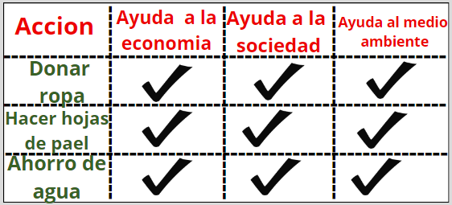

Rama de la Biologia que estudia el ambiente en el que habiatan los seres vivos.
La ecología es una disciplina amplia y fundamental que se centra en las interacciones entre los organismos y su entorno. Se adentra en las relaciones entre los seres vivos (plantas, animales, hongos, bacterias, etc.) y su entorno, incluyendo otros organismos y elementos físicos como el aire, el agua y el suelo. La ecología es crucial para comprender los ecosistemas, la biodiversidad y el delicado equilibrio que sostiene la vida en la Tierra. Desde especies individuales hasta ecosistemas enteros, los ecólogos estudian cómo los organismos se adaptan a su entorno, cómo interactúan entre sí y cómo influyen en su entorno. Este conocimiento es vital para abo
Sustentabilidad:
Se refiere al equilibrio de una especie con los recursos de su entorno(Consumo responsable).
La sustentabilidad se refiere a la capacidad de satisfacer las necesidades presentes sin comprometer la capacidad de las futuras generaciones para satisfacer sus propias necesidades. Implica encontrar un equilibrio entre el desarrollo económico, social y ambiental para garantizar un mejor futuro para todos, sin agotar los recursos naturales ni degradar el medio ambiente. La sustentabilidad se aplica en diferentes ámbitos, como la agricultura, la energía, la gestión de recursos naturales, el urbanismo, entre otros, con el objetivo de promover prácticas que sean respetuosas con el medio ambiente, socialmente justas y económicamente viables a largo plazo. Es fundamental para abordar los desafíos globales como el cambio climático, la pérdida de biodiversidad y la escasez de recursos, y para construir un mundo más equitativo y sostenible para las generaciones futuras.
Ambitos:

Desarrollo Sustentable:
El desarrollo sustentable es un enfoque que busca satisfacer las necesidades presentes sin comprometer la capacidad de las futuras generaciones para satisfacer sus propias necesidades. Se basa en encontrar un equilibrio entre el crecimiento económico, la inclusión social y la protección del medio ambiente.
Para lograr el desarrollo sustentable, es necesario considerar aspectos ambientales, sociales, económicos y culturales en todas las decisiones y acciones, tanto a nivel local como global. Esto implica promover prácticas y políticas que sean respetuosas con el medio ambiente, socialmente justas y económicamente viables a largo plazo.